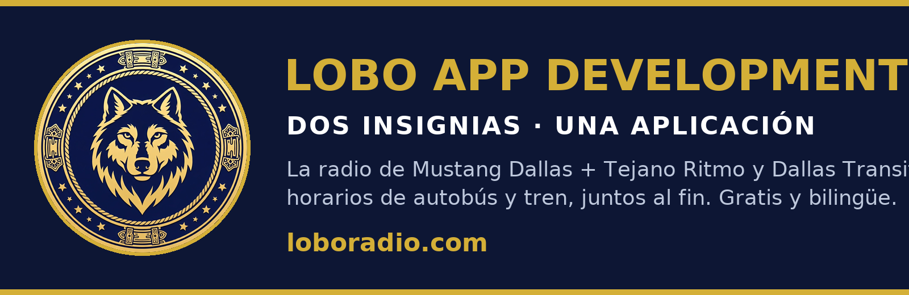

¡Puro Tejano! Tejano Ritmo es la estación de pura música tejana de la Lobo Radio Network — conjunto, orquesta y cumbia, las 24 horas del día. Nuestra biblioteca ya cuenta con 228 canciones de 65 artistas, y apenas estamos empezando.
Desde las leyendas hasta los éxitos de hoy — si es tejano, aquí tiene su casa.
Favoritos tejanos todo el día para inaugurar la estación — y en diciembre, Tejano Ritmo se une a Mustang Dallas con música navideña durante todo el mes.
Noticias del lanzamiento en la página de Facebook de Mustang Dallas y en @mustang.dallas.radio en Instagram, mientras abren los canales propios de Tejano Ritmo.
El novillo corre por el corral. Oprime ¡LAZAR! (o toca el corral) para tirar la soga. Ojo: la soga tarda un instante en llegar, así que apunta un poco adelante del novillo. Tienes diez tiros — ¡atrapa los que puedas!
Atrapados: 0 · Tiros que quedan: 10 · Récord: 0
📘 Facebook 📸 Instagram 💬 Discord

Nuestras dos apps insignia en una sola: la radio de Tejano Ritmo + Mustang Dallas y los horarios de autobús y tren de Dallas Transit. Escucha tu estación mientras esperas tu autobús — la radio sigue tocando durante el viaje. Gratis, sin anuncios y sin cuenta. En español e inglés.
Nueva de Lobo App Development, 4 de noviembre de 2026. Toca la descarga y abre el archivo para instalar — Play Protect la escanea automáticamente. Solo para Android por ahora.
Las dos estaciones en una sola app — Tejano Ritmo y Mustang Dallas, cambia de estación con un solo toque. Y recuerda la estación que estabas escuchando.
Toca la descarga y abre el archivo para instalar. Tu teléfono ofrecerá escanearla primero — pasó la revisión de Google Play Protect. Solo para Android por ahora.